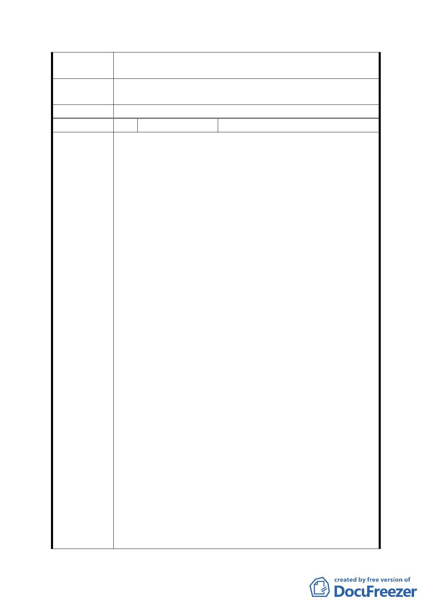

第五次專案小組
審查結論
同編號 1
市府修正後
回應說明
同編號 1
委員會決議 同意依「市府修正後回應說明」辦理
編 號 5 陳情人
林宏正
主旨：反對都市發展局辛亥高中預定地都市計畫變更案之公
展規劃，請查照。
說明：
一、覆97/7/10府都規字第09732907400號公展。
二、前述計畫土地，本人於民國（以下同）四十二年間繼承，
七十七年教育局界興建辛亥高中之名而藉法定程序強
制剝奪人民受憲法保障之財產權，於發放徵收補償費
時，逕行扣除土地增值稅新台幣八0三、九八九元。
三、民國八十六年十一月四日請求權人申請發還，卻要求所
支付價款需含先前逕行扣除之土地增值稅。
四、是故，在辛亥高中計畫案下，本人除喪失在徵收期間土
地使用權及土地增值稅外，且教育局在徵收期間怠於行
使管理人之責任，致使本地先後被文山區公所鋪路柏油
及因挖掘山坡地而興建擋土牆、公園處架設路燈及停管
處私設停車格線等妨礙所有權之工程，造成目前雖回復
陳情理由
所有權，卻無法有效行使管理使用權。
五、公展聲稱『…另本計畫區內軍方營舍，經國防部軍備局
評估仍有使用需求，且極為重要無法釋出，建議將營區
使用範圍區變更為「機關用地」…』，然而地主依法申
請開放使用卻遭駁回，是否代表『州官可以放火，百姓
不許點燈』之霸權心態。
六、『又本計畫區屬於興隆幹線排水系統，該系統於興隆與
辛亥路口、興德路及福興路等處，近來皆曾發生積水事
件…』，然根據97/7/25辛亥國小公展會議中當地居民表
示其所住之區域未曾有積水之情勢，且該地地勢較高，
並不符合水往低處流之常理。
七、『本案配合各需地機關需求，為使管、用合一，並促進
本計畫區土地有效、合理利用，改善地區環境，提升都
市生活品質…』，本案用地緊鄰台北捷運辛亥站，本站
為台北市第一個簽訂聯合開發之地區，迄今已逾二十年
仍未動工，辛亥高中遲未能興建，不可不謂其原因之
一，究其原因乃為軍方營舍拒遷。且人工生態池造成蚊
- 18 -